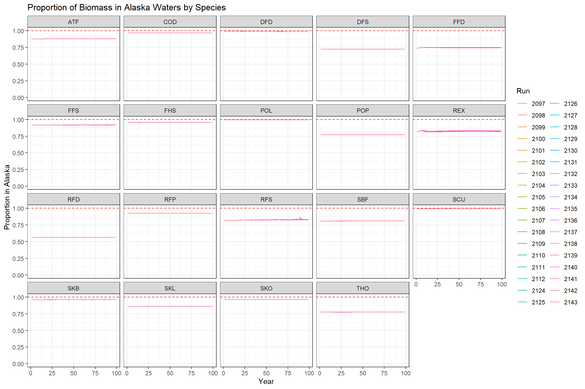
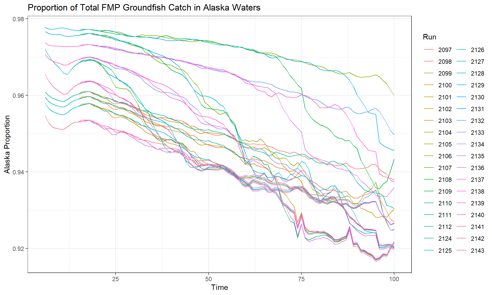
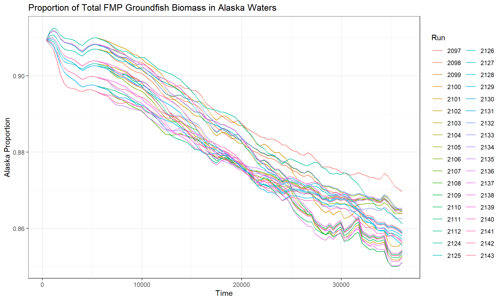

library(tidyverse)
library(data.table)
library(tidync)
library(ncdf4)
# Set up run parameters
run <- c(2097:2112, 2124:2143)
yr_end <- 100 # Adjust based on actual run length
oy_species <- c("POL", "COD", "ATF", "SBF", "POP", "FFS", "FHS", "FFD",
"DFS", "DFD", "REX", "RFS", "RFP", "RFD", "THO", "SKB",
"SKL", "SKO", "SCU") # Adjust based on actual OY species
# read in species info
grps <- read.csv("data/GOA_Groups.csv")
codes <- grps %>% pull(Code)
oy_names <- grps %>% filter(Code %in% oy_species) %>% pull(Name) # need this for the NC filesSpatial Analysis of Alaska-BC Model Domain for Ecosystem Cap Management
Overview
This analysis explores the issue with the spatial mismatch between the management domain (Alaska) and the model domain (Alaska + British Columbia). The Atlantis model includes boxes representing both Alaska and British Columbia waters, but the Optimum Yield (OY) ecosystem cap is only applied to Alaska fisheries management.
Problem Statement
The key challenge is that all management calculations—including Harvest Control Rules (HCRs) and OY ecosystem cap calculations—are performed using model-wide biomass and catch data (Alaska + BC), but in reality, the OY cap would only apply to Alaska waters. Implementing spatial HCR and OY management into Atlantis is not viable. Equally, eliminating the BC part of the model is not a real option, as it would basically require developing a new model. However, this mismatch creates several analytical and interpretive issues.
Arguments Against Limiting Analysis to US Waters Only
- Model Design: The unfished biomass proxy (estBo) is computed model-wide as a population property. While it could be computed for relevant boxes only, the model applies management across all boxes.
- Management Reality: HCRs are not spatial, nor is the OY cap calculation—both are based on whole-model biomass.
- F Application: Setting F=0 in BC boxes won’t help because management calculations will still use total model biomass.
Arguments For Limiting Analysis to US Waters Only
- Management Relevance: FMSY/proxies will be compared to Alaska-specific reference points, whether or not we call for a specific comparison.
- Jurisdictional Reality: The OY cap applies only to Alaska waters.
- Policy Relevance: Results should reflect actual management boundaries.
Data Setup and Configuration
Analysis Functions
Function: Extract Alaska Biomass Proportions
get_AK_biom <- function(this_run) {
print(this_run)
# File paths
wd <- paste0("C:/Users/Alberto Rovellini/Documents/GOA/Parametrization/output_files/data/out_", this_run)
biom_file <- paste0("outputGOA0", this_run, "_testBoxBiomass.txt")
# Read biomass data
biom <- data.table::fread(paste(wd, biom_file, sep = "/"),
sep = " ",
header = TRUE,
nThread = getDTthreads())
# Filter time steps
time_filter <- seq(1, yr_end) * 365
biom <- biom[Time %in% time_filter & Time/365 <= yr_end]
# Convert to long format and filter to OY species
biom_long <- data.table::melt(biom,
id.vars = c("Time", "Box"),
variable.name = "Code",
value.name = "mt")
biom_filtered <- biom_long[Code %in% oy_species]
# Add spatial designation (Box < 92 = Alaska, Box >= 92 = BC)
biom_filtered[, region := fifelse(Box < 92, "AK", "BC")]
# Summarize by region and calculate proportions
biom_space <- biom_filtered[, .(mt = sum(mt)), by = .(Time, region, Code)]
biom_space[, tot_mt := sum(mt), by = .(Time, Code)]
biom_space[, prop := mt / tot_mt]
# Return Alaska-specific data
result <- biom_space[region == "AK", .(Time, Code, prop, tot_mt)]
result[, run := this_run]
return(result)
}Biomass Analysis
Extract Spatial Biomass Data
# Extract biomass data for all runs
biom_spatial <- bind_rows(lapply(run, get_AK_biom))
# Calculate mean proportions by species
props <- biom_spatial %>%
group_by(Code) %>%
summarise(mean_prop = mean(prop)) %>%
arrange(-mean_prop)
# Calculate total biomass contributions
total_biomass_props <- biom_spatial %>%
slice_min(Time) %>%
slice_min(run) %>%
mutate(all_biom = sum(tot_mt)) %>%
mutate(totprop = tot_mt / all_biom) %>%
select(Code, totprop) %>%
arrange(-totprop)Visualization: Biomass Proportions Over Time
biom_spatial %>%
mutate(Code = factor(Code, levels = sort(oy_species))) %>%
ggplot(aes(x = Time/365, y = prop, color = factor(run))) +
geom_line() +
geom_hline(yintercept = 1, color = "red", linetype = "dashed") +
theme_bw() +
scale_y_continuous(limits = c(0,1)) +
facet_wrap(~Code) +
labs(
title = "Proportion of Biomass in Alaska Waters by Species",
x = "Year",
y = "Proportion in Alaska",
color = "Run"
)
Key Findings: Biomass Distribution
Species-Specific Alaska Proportions (Mean across all runs):
props# A tibble: 19 × 2
Code mean_prop
<fct> <dbl>
1 SCU 0.996
2 POL 0.995
3 DFD 0.989
4 COD 0.966
5 SKO 0.964
6 SKB 0.961
7 FHS 0.957
8 RFP 0.927
9 FFS 0.918
10 ATF 0.878
11 SKL 0.859
12 RFS 0.827
13 REX 0.824
14 SBF 0.810
15 THO 0.775
16 POP 0.772
17 FFD 0.747
18 DFS 0.724
19 RFD 0.565- Highest Alaska concentration (>95%): SCU (99.6%), POL (99.5%), DFD (98.9%), COD (96.6%)
- Moderate Alaska concentration (80-95%): SKO, SKB, FHS, RFP, FFS, ATF, SKL, RFS, REX, SBF, THO
- Lowest Alaska concentration (<80%): POP (77.2%), FFD (74.7%), DFS (72.4%), RFD (56.5%)
Key Observations:
- Temporal Stability: Proportions remain constant over time across all runs
- Cross-Run Consistency: Proportions are identical across runs (short of minor variations)
- Management Implications: POL and COD, the most important commercial species, and also the biggest biomass and catch in the model, are almost entirely in Alaska waters. Arrowtooth, sablefish, and POP have a sizable proportion of their biomass in BC waters (12%, 19%, 23% of total biomass). This is concerning for arrowtooth because it is a large biomass of the total model groundfish biomass (23%), and for the other two because they are important for management, they have relatively higher F, and we may need to increase their biomass in the model to match recent conditions in the GOA.
Catch Analysis
Function: Extract Total Catch by Region
build_catch_output_TOT <- function(this_run) {
print(paste(this_run, "CATCH"))
# File paths
wd <- paste0("C:/Users/Alberto Rovellini/Documents/GOA/Parametrization/output_files/data/out_", this_run)
ncfile <- paste0(wd, "/outputGOA0", this_run, "_testTOTCATCH.nc")
# Read NetCDF file
this_tidync <- tidync(ncfile)
this_nc <- ncdf4::nc_open(ncfile)
catch_nc_tot_ls <- list()
# Extract catch data for each OY species
for(i in 1:length(oy_names)) {
fg <- oy_names[i]
code <- grps %>% filter(Name == fg) %>% pull(Code)
# Extract catch variables
catch_vars <- this_tidync %>%
activate("D1,D0") %>%
hyper_vars() %>%
filter(grepl("Tot_.*_Catch", name)) %>%
filter(grepl(code, name))
catch <- purrr::map(catch_vars$name, ncdf4::ncvar_get, nc = this_nc)
catch_df <- as.data.frame(catch)
# Add spatial information and reshape
catch_df <- catch_df %>%
mutate(box_id = 0:108) %>%
pivot_longer(-box_id, names_to = "ts", values_to = "mt") %>%
mutate(
ts = as.numeric(gsub("X", "", ts)) - 1,
Name = fg,
Code = code
) %>%
filter(ts > 0)
catch_nc_tot_ls[[i]] <- catch_df
}
catch_nc_TOT <- bind_rows(catch_nc_tot_ls) %>%
mutate(run = this_run)
return(catch_nc_TOT)
}Catch Spatial Analysis
# Extract catch data for all runs
catch_spatial <- bind_rows(lapply(run, build_catch_output_TOT))
# Calculate regional proportions
catch_spatial2 <- catch_spatial %>%
mutate(region = ifelse(box_id < 92, "AK", "BC")) %>%
group_by(ts, Name, Code, run, region) %>%
summarise(mt_region = sum(mt), .groups = "drop") %>%
group_by(ts, Name, Code, run) %>%
mutate(
mt_all = sum(mt_region),
prop = mt_region / mt_all
) %>%
ungroup() %>%
filter(region == "AK")catch_spatial2 %>%
filter(run == 2097, ts == 15) %>%
select(Name,prop) %>%
arrange(-prop)# A tibble: 19 × 2
Name prop
<chr> <dbl>
1 Deep_demersal 1.00
2 Sculpins 0.995
3 Pollock 0.995
4 Cod 0.965
5 Skate_other 0.963
6 Flathead_sole 0.960
7 Skate_big 0.958
8 Rockfish_pelagic_shelf 0.927
9 Flatfish_shallow 0.916
10 Arrowtooth_flounder 0.876
11 Skate_longnose 0.854
12 Rex_sole 0.836
13 Rockfish_slope 0.818
14 Sablefish 0.809
15 Thornyhead 0.775
16 Pacific_ocean_perch 0.771
17 Flatfish_deep 0.750
18 Shallow_demersal 0.722
19 Rockfish_demersal_shelf 0.563The proportions of catch extracted from each region compared to the total catch of the species are consistent wiht the region-specific biomass proportions, which is unsurprising because F acts homogeneously in space.
catch_spatial2 %>%
filter(ts > 5) %>% # make sure that the HCR is already going
group_by(ts,run,region) %>%
summarise(mt_region = sum(mt_region),
mt_all = sum(mt_all)) %>%
group_by(ts,run) %>%
mutate(prop = mt_region / mt_all) %>%
ggplot(aes(x = ts, y = prop, color = factor(run)))+
geom_line()+
#scale_y_continuous(limits = c(0,1))+
labs(
title = "Proportion of Total FMP Groundfish Catch in Alaska Waters",
x = "Time",
y = "Alaska Proportion",
color = "Run"
) +
theme_bw()
Total catch from the model is 92-98% from AK across all runs, declining over time. This is an important point and it highlights that yes, BC catch is not rounding error in this model, but that the majority still comes from the AK portion.
Total Biomass in Alaska
# Calculate ecosystem-wide Alaska proportions
spillover <- biom_spatial %>%
left_join(props, by = "Code") %>%
mutate(ak_mt = tot_mt * mean_prop) %>%
group_by(Time, run) %>%
summarise(
all_biom = sum(tot_mt), # Total model-wide biomass
all_biom_ak = sum(ak_mt), # Total Alaska biomass
.groups = "drop"
) %>%
mutate(akprop = all_biom_ak / all_biom)
# Visualization
spillover %>%
ggplot(aes(x = Time, y = akprop, color = factor(run))) +
geom_line() +
labs(
title = "Proportion of Total FMP Groundfish Biomass in Alaska Waters",
x = "Time",
y = "Alaska Proportion",
color = "Run"
) +
theme_bw()
Key Finding: 84-91% of total FMP groundfish biomass is in Alaska waters, with variation due to different population dynamics of Alaska-dominant vs. BC-dominant stocks. Catch proportion is higher than biomass proportion, likely because the two stocks that drive the catch (pollock and cod) are almost only in the AK portion. This may change if we tune cod to be a smaller biomass in the model and sablefish and POP to be a larger biomass, which would be more reflective of recent conditions in the GOA.
Management Implications
Impact on Harvest Control Rules (HCRs)
Assessment: HCR management is NOT significantly affected by the spatial issue.
Reasoning: - HCRs are based on B/B₀ ratios, which are proportional - F is applied equally across the model domain - Since proportions remain constant over time, B/B₀ in Alaska ≈ B/B₀ in BC ≈ B/B₀ model-wide - The proportional nature of HCR calculations means spatial distribution doesn’t affect F determination
Impact on Optimum Yield (OY) Management
Assessment: OY management IS significantly affected by the spatial issue.
Problem: - Each year, projected catch includes biomass from BC (up to 44% for some species) - BC biomass contributes to model-wide catch projections against the cap - If only Alaska were considered, the cap might not be reached, and OY rescaling might not activate - This is particularly problematic for high-biomass species like Arrowtooth Flounder (ATF), which comprises 23% of total biomass with 12% in BC waters - However, worth noting at the moment that >92% of the catch comes from Alaska. The problem may become more concerning if the biomass makeup of the ecosystem changes because we modify cod / sablefish / POP biomasses. Also worth noting that F on ATF will go even lower in the final runs, so ATF catch should become less important against the cap.
Species of Greatest Concern
Based on biomass contribution and BC proportion:
- Arrowtooth Flounder (ATF): 23% of total biomass, 12% of which in BC
- Sablefish (SBF): 3% of total biomass, 19% of which in BC
- Pacific Ocean Perch (POP): 2% of total biomass, 23% of which in BC
Potential Solutions
Option 1: Model-Wide Management Approach
Approach: Apply ecosystem cap to entire model domain - Pros: Cleaner explanation, illustrates concepts clearly - Cons: No OY management exists in BC; questionable relevance to NPFMC
Option 2: Alaska-Only Analysis
Approach: Rescale all plots to Alaska waters only, including B₀ - Pros: Reflects actual management boundaries - Cons: Cap reference lines would be inconsistent; management calculations still use model-wide data
Conclusions
Biomass Distribution: Most OY species have >80% of biomass in Alaska waters, with notable exceptions (RFD at 57%, DFS at 72%)
Temporal Consistency: Spatial proportions remain stable over time and across management scenarios
HCR Impact: Minimal—proportional calculations are unaffected by spatial distribution
OY Impact: Significant—BC biomass artificially inflates catch projections against Alaska-only caps
Key Species: Arrowtooth Flounder presents the largest concern due to high biomass and meaningful BC proportion. Sablefish and POP may become concerning if we increase their biomass in the model’s initial conditions.
For a manuscript, the best course of action is probably using Option 1 and providing plenty of supplemental information on how much of the biomass (and more importantly catch) come from each part of the model, and how this mismatch is influencing the results.
Rescaling model output is misleading - calculations in Atlantis are done model-wide. Also you’d need to rescale the caps as well, or else the catch will not meet the horizontal lines.